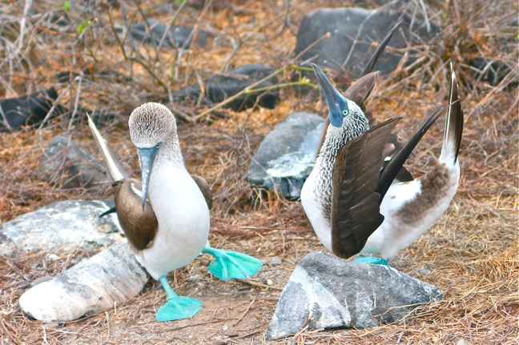
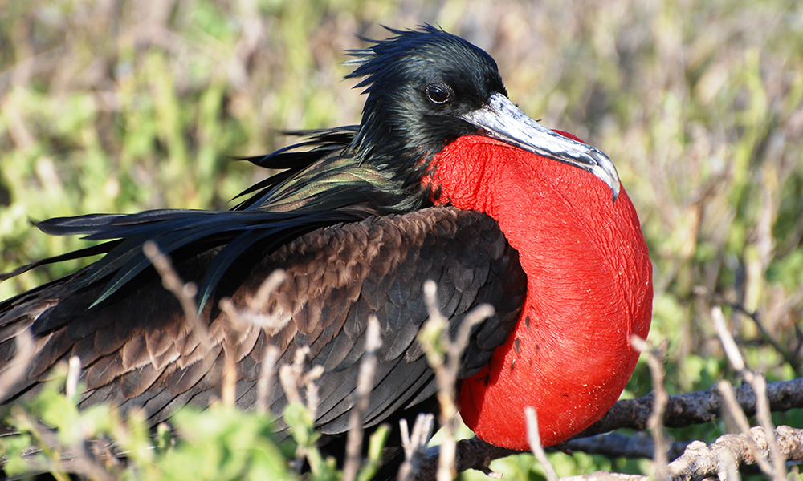
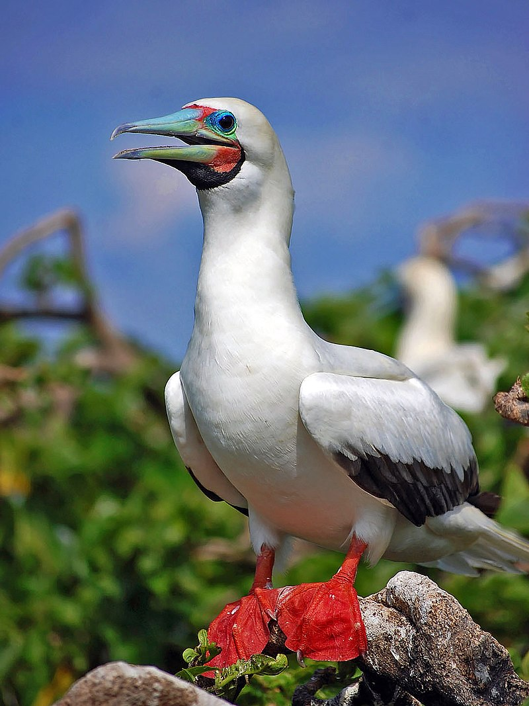
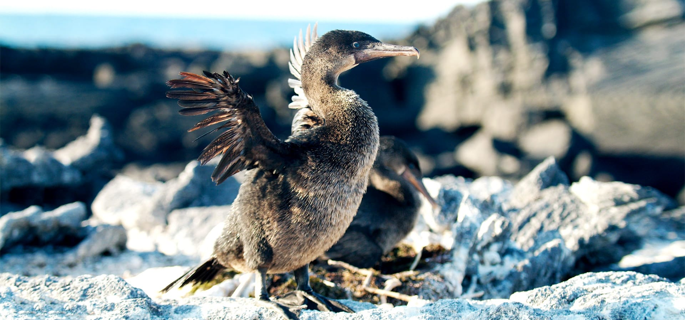
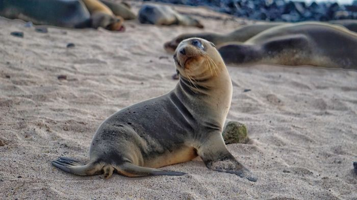

นกบูบีเท้าฟ้า
Binomial name: Sula nebouxii
Kingdom: Animalia
Phylum: Chordata
Class: Aves
Order: Suliformes
Family: Sulidae
Genus: Sula
Species: S. nebouxii

เพนกวิน

เป็นนกบูบีชนิดหนึ่ง ในบรรดา 6 ชนิด จัดอยู่ในวงศ์นกบูบี (Sulidae) เป็นนกทะเลที่มีขนาดใหญ่ชนิดหนึ่ง มีความยาวลำตัวได้ถึง 90 เซนติเมตร (36 นิ้ว) ความกว้างของปีกจากข้างหนึ่งไปอีกข้างหนึ่งถึง 1.5 เมตร (4.9 ฟุต) นกบูบีตีนฟ้า มีลักษณะเด่นอันเป็นที่มาของชื่อ คือ ตีนที่เป็นพังผืดขนาดใหญ่เหมือนตีนเป็ดเป็นสีฟ้าหรือสีน้ำเงินสดในตัวผู้ ซึ่งสีฟ้านี้เป็นสัญลักษณ์บ่งบอกถึงความแข็งแรงและช่วงอายุวัย นกตัวที่มีอายุมากและร่างกายไม่แข็งแรง สีฟ้าก็จะจืดจางลงไป นกตัวเมียจะเลือกตัวผู้ที่มีสีสดใส นอกจากนี้แล้วนกบูบีตีนฟ้า ยังเป็นนกบูบีเพียงชนิดเดียวเท่านั้นที่เมื่อจับคู่ผสมพันธุ์ ตัวผู้จะมีลีลาการเต้นรำด้วยการเต้นสลับขากัน กางปีก และส่งเสียงร้องเพื่อสร้างความประทับใจให้แก่ตัวเมีย ที่มีขนาดใหญ่กว่าเล็กน้อย ด้วยพฤติกรรมเช่นนี้ ทำให้นกบูบีตีนฟ้าเป็นที่นิยมอย่างมากที่จะถ่ายภาพของผู้ที่นิยมการถ่ายภาพสัตว์ป่าหรือผู้ที่ชื่นชอบการท่องเที่ยวผจญภัยธรรมชาติ ฤดูการผสมพันธุ์ของนกบูบีตีนฟ้าอยู่ในราวปลายเดือนมิถุนายนถึงต้นเดือนกรกฎาคม เป็นนกที่สื่อสารกันด้วยเสียงร้องคล้ายเสียงผิวปาก เมื่อจับคู่กันแล้ว ถึงแม้ว่าจะมีอีกฝ่ายกำลังบินอยู่ก็ตาม นกบูบีตีนฟ้าเป็นนกที่จับคู่เพียงตัวเดียวตลอดทั้งชีวิต ทำรังโดยการวางไข่ไว้บนพื้นดิน โดยมักสร้างอยู่ใกล้พุ่มไม้เพื่อช่วยในการบังกระแสลม วางไข่ครั้งละฟองเดียว หรือไม่เกิน 2 ฟอง บางครั้งอาจมากได้ถึง 3 ฟอง แต่ไข่ที่มีจำนวนมากถึงเช่นนี้ทำให้พ่อแม่นกไม่สามารถให้ความอบอุ่นในการฟักได้อย่างทั่วถึง ส่งผลถึงพัฒนาการของลูกนก ในยามกกไข่ แม่นกมักจะหันหน้าเข้าทางแสงแดดตลอด นักเดินเรือในยุคกลางจึงใช้พฤติกรรมของนกบูบีตีนฟ้าเป็นเข็มทิศ เมื่อฟักออกมาแล้ว ลูกนกจะแข่งขันกันเองในหมู่พี่น้อง ตัวที่แข็งแรงกว่าก็จะเป็นตัวที่อยู่รอดต่อไปจนเติบใหญ่ นกบูบีตีนฟ้า หาปลาในทะเลกินเป็นอาหาร โดยมีพฤติกรรมบินโฉบเพื่ออาหาร โดยจะบินสูงขึ้นและหยุดอยู่ชั่วระยะหนึ่ง เพื่อที่จะพับปีกให้แนบลู่กับลำตัว แล้วทิ้งตัวพุ่งดิ่งลงในน้ำ ซึ่งการบินลักษณะนี้ทำให้นกบูบีสามารถดำน้ำได้ลึกและจับปลาได้อย่างไม่พลาด นอกจากนี้แล้วยังมีส่วนหางที่ยาว ซึ่งหางนี้มีส่วนช่วยในการพยุงตัวให้บินโฉบเฉี่ยวไปมาได้อย่างคล่องแคล่ว และยังช่วยให้สามารถเปลี่ยนทิศทางในการบินและดำน้ำลงไปจับปลาได้อีกด้วย อีกทั้งตีนที่เป็นพังผืดก็ช่วยให้ว่ายน้ำและดำน้ำได้อย่างดี จนสามารถพุ่งขึ้นบินสู่อากาศได้เลยเมื่อขึ้นมาบนผิวน้ำ นกบูบีตีนฟ้า กระจายพันธุ์ตลอดชายฝั่งมหาสมุทรแปซิฟิก ตั้งแต่ชายฝั่งทะเลแคลิฟอร์เนีย ในสหรัฐอเมริกา จนถึงหมู่เกาะกาลาปากอส และทิศใต้ของประเทศเปรู แต่ที่หมู่เกาะกาลาปากอสนั้น ไม่ได้มีนกบูบีตีนฟ้าอาศัยอยู่ในทุกเกาะ นกบูบีตีนฟ้า เป็นที่รู้จักครั้งแรกของชาวตะวันตก โดยชาร์ล ดาร์วิน ระหว่างการเดินทางไปยังหมูเกาะกาลาปากอส โดยการอนุกรมวิธานเกิดขึ้นในปี ค.ศ. 1822 ปีเดียวกับที่ดาร์วินเสียชีวิต โดยตัวอย่างต้นแบบแรกถูกส่งมาจากหมู่เกาะกาลาปากอส มีการศึกษาและจำแนกไว้ว่ามี 2 ชนิดย่อย คือ Sula nebouxii excisa Todd, 1948 และ Sula nebouxii nebouxii Milne-Edwards, 1882
ชนิดของสัตว์ในเกาะกาลาปากอส

Finch Dawin
นกตัวที่ 1

Grapsus Crapsus
ปูตัวที่ 1

Marine Iguana
อิกัวน่าตัวที่ 1

Galápagos Penguin
เพนกวินตัวที่ 1

Galápagos Tortoise
เต่าตัวที่ 1

Bluebooby
นกตัวที่ 2

Magnificent Frigatebird
นกตัวที่ 3

Red-Footed Booby
นกตัวที่ 4

Flightless Cormorant
นกตัวที่ 5

Galápagos Sea Lion
แมวน้ำตัวที่ 1